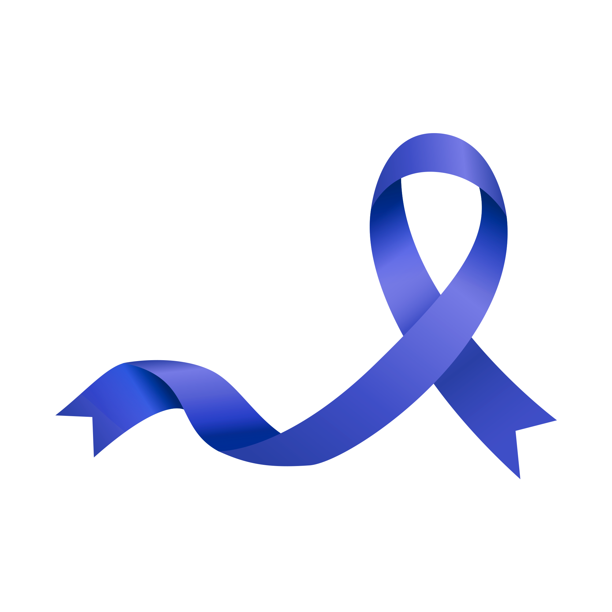

Prevenção e Saúde Masculina
Novembro Azul é uma campanha dedicada à conscientização sobre o câncer de próstata e saúde integral do homem. Compreender sintomas, fatores de risco e opções de prevenção é fundamental para um futuro mais saudável.
Por que Novembro Azul?
O câncer de próstata é o segundo mais comum em homens. Diagnóstico precoce aumenta significativamente as chances de sucesso no tratamento. A conscientização salva vidas.
- 1 em 9 homens receberá diagnóstico de câncer de próstata
- Diagnóstico precoce aumenta taxa de cura para 99%
- Conversas abertas sobre saúde são essenciais

Informações Essenciais
🩺 Sintomas
Conheça os sinais de alerta e quando procurar ajuda médica. Nem todos apresentam sintomas precocemente.
Saiba Mais🔬 Exames
PSA e toque retal são ferramentas importantes. Discuta com seu médico a melhor estratégia para você.
Conhecer❤️ Prevenção
Hábitos saudáveis, exercício regular e nutrição equilibrada contribuem para a saúde geral.
Explorar👨⚕️ Profissionais
Procure urologista ou clínico geral. Muitos municípios oferecem campanhas e orientações gratuitas.
RecursosDúvidas Frequentes
Como começa o câncer de próstata?
A próstata é uma glândula do sistema reprodutor masculino. O câncer se desenvolve quando as células crescem descontroladamente. Fatores genéticos, idade e hormônios influenciam o risco.
Qual é a diferença entre PSA alto e câncer?
PSA elevado não significa câncer. Inflamação, infecção ou próstata aumentada também elevam PSA. Só o médico pode avaliar corretamente o resultado.
A que idade devo começar a me preocupar?
Risco aumenta após 50 anos. Para homens com história familiar ou ascendência africana, discussão com médico é recomendada a partir dos 45 anos.